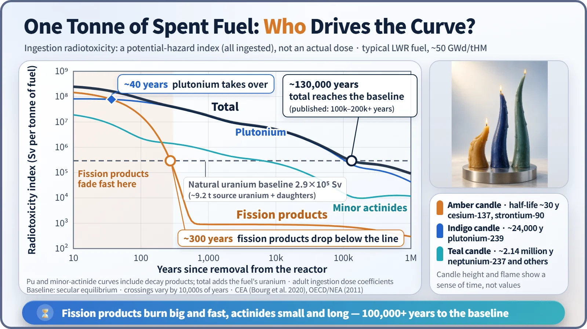

Society, Environment & the Future · 292
Candles That Burn at Different Speeds — The Time Scales of Radioactive Waste
Radiotoxicity drops below one-tenth in the first 1,000 years, then fades slowly for hundreds of thousands more. Which candle you mean changes the whole timetable.
"Dangerous for 100,000 years" is only half the story. The radiotoxicity of spent fuel falls below one-tenth within the first 1,000 years, and what drives it changes: short-lived fission products dominate the first few centuries, long-lived plutonium and minor actinides the hundreds of thousands of years after that. [1]
Three horn-shaped candles on a table
Imagine three candles on a table, each shaped like a cow's horn: thick at the base, curving to a thin tip. The first is thick and short. Light it and it blazes up big, but it burns down quickly. The second is thin and long. Its flame is small, but it burns for a very long time. The third is thinner still, with a flame the size of a pea that seems to burn forever.
Spent nuclear fuel, the fuel taken out of a reactor after a few years of use, is exactly like this. The many radioactive elements inside it each "burn" away at their own speed. Elements with short half-lives are intensely radioactive but disappear quickly; elements with long half-lives are weaker but linger.
Measuring hazard with a single number
To compare the flames, specialists use a number called radiotoxicity:
Radiotoxicity = Σ (activity of each element × dose coefficient)
Activity is how many decays happen per second (becquerels, Bq), and the dose coefficient is the dose your body receives from swallowing 1 Bq of that element (sieverts, Sv). Multiply and add everything up, and you get "the dose if someone ate all of the waste." [2]
This is not an actual exposure but an index for comparing hazard potential. In a real repository, the solid waste form, a metal canister, a clay buffer and deep bedrock all stand in the way. The number is used to see what matters, and when.
The thick candle burns big first: fission products

The first candle is the fission products, the elements created when uranium splits. The leading players are cesium-137 (half-life about 30 years) and strontium-90 (about 29 years). In freshly removed fuel they produce most of the radioactivity and heat. When we say they fade, it means those particular elements decrease, not that everything else has vanished too.
In 300 years they pass ten half-lives and drop to about one-thousandth. For a representative fuel, the fission product radiotoxicity of about 150 million Sv per tonne at year 10 falls to around 100,000 Sv by about year 300. Heat follows the same clock: about 1.5 kW per tonne at year 10 drops to around 0.4 kW after 100 years, and from then on plutonium and americium produce most of the heat.
The thin candles burn for hundreds of thousands of years: actinides
The second candle is plutonium, formed when uranium-238 absorbs a neutron; plutonium-239 has a half-life of about 24,000 years. The third is the minor actinides, such as americium and neptunium; neptunium-237's half-life is about 2.14 million years.
Their flames are small, but they burn for a long time. By about 40 years after removal, plutonium's share of the total radiotoxicity overtakes the fission products, and for hundreds of thousands of years after that it sets the shape of the curve. The hand-over (a few decades) and the moment the fission products fall below the baseline (about 300 years) are two different events.
A common reference for "fallen enough" is the natural uranium ore baseline: the radiotoxicity that the roughly 9 tonnes of natural uranium needed to make one tonne of fuel originally had in the ground, together with its decay products. Published curves show spent fuel takes about 100,000–200,000 years or more to come down to this line. [1]
| Waste form | Time to reach the natural uranium baseline |
|---|---|
| Spent fuel, as is | about 100,000–200,000 years or more |
| Vitrified high-level waste (uranium and plutonium removed by reprocessing) | about 10,000 years |
| With partitioning and transmutation of minor actinides as well | about 300 years (research and demonstration stage) |
Take candles out and the clock changes, as the table shows. Partitioning and transmutation, however, is still at the research and demonstration stage. [3]
Why do regulators look a million years ahead?
![Three timetables on one logarithmic time ruler from 1 to 1 million years: bars ending at about 300 years for fission products, about 10,000 years for vitrified waste, 100,000 to 200,000-plus years for spent fuel and about 300 years for partitioning and transmutation; a 300-year control bracket for low-level waste; the Yucca Mountain standard of 0.15 mSv per year to 10,000 years and 1 mSv per year beyond; and Sweden's 1-million-year assessment, with history markers such as the 1720s and the start of farming](../../assets/images/theory/292-radioactive-waste-timescales/fig2-timescale-ruler.webp)
Safety assessments for high-level waste repositories cover long periods. In the United States, the standard written specifically for the Yucca Mountain repository set 0.15 mSv per year for the first 10,000 years after disposal and 1 mSv per year from then out to 1 million years. Sweden also assesses 1 million years after closure. [4] [5]
There are three reasons. Long-lived elements take on the order of 100,000 years to fall below the baseline. Because canisters corrode and groundwater moves extremely slowly, the time of peak dose may itself lie far in the future. And over that span, the site must also get through major climate shifts such as ice ages. [6]
"So who guards it for a million years?" Deep disposal is not a concept in which people stand guard. It is designed so that multiple barriers and stable geology contain the waste on their own. The million-year assessment is the calculation that checks whether that design works.
The same 300 years, a different ending
Low-level waste is a different story. Its main players are short- and medium-lived elements such as cobalt-60 (about 5 years) and cesium-137 (about 30 years) on work clothes and filters, so most of it decays away within a few hundred years. That is why designs with about 300 years of control are used, as at the disposal facility in Gyeongju, South Korea.
At a low-level waste facility, those 300 years are the reference period of the control design. For spent fuel, they mark only the point where one thick candle has burned low.
Key takeaways
The hazard of radioactive waste is not a single fixed number. For the first few hundred years the fission products blaze; for hundreds of thousands of years after that the actinides burn small and long. That timetable sets the disposal depth, the barriers and the assessment period. The next time you hear "dangerous for 100,000 years," ask which candle the speaker means.